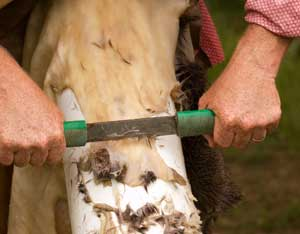

After hunting or processing livestock for the table, it's a shame to have to toss out a nice pelt. Here is a method of tanning hides that is low cost and low labor compared to other methods of “custom tanning.” I've personally used this system to tan sheepskins, deerskins, groundhog pelts, rabbit hides and goat skins. The procedure can be used for all kinds of mammal pelts when you want the fur to remain on the skin. It results in a soft, workable hide, which can be used as is or cut up for sewing projects.
Fresh hides right off the animal should be cooled immediately. Trim off any flesh and scrape visible fat from the hide. Place the skin in the shade, laying it completely flat with the fur side down, preferably on a cold concrete or rock surface. When the skin feels cool to the touch, immediately cover the fleshy side completely with plain, uniodized salt.
Use three to five pounds for a sheep or deer skin. Don't skimp.
If skins aren't salted within a few hours of removal of the flesh, you might as well forget it. They will have begun to decompose and will probably lose their hair during processing.
Transport the skin flat. We've had problems with predators gnawing the edges of skins, so put the hide somewhere out of reach. You don't need to stretch the skin; just make sure it is perfectly flat, with no curled edges. If you've lost a lot of salt while moving the pelt, add more. The salt will draw moisture from the skin and liquid may pool in low spots. Just add more salt. Let the skin dry until it is crispy. This may take a few days to a couple of weeks. When completely dry, the skin is very stable and won't change or deteriorate appreciably.
When you're ready to tan the skins, assemble the following:
7 gallons water
2 pounds (16 cups) bran flakes
16 cups plain or pickling salt (not iodized)
2 large plastic trash cans (30 gallon) and one lid
4 foot wooden stirring stick
3½ cups battery acid (from auto parts store)
2 boxes baking soda
wood rack or stretcher
neat's-foot oil
nails
wire bristle brush
This recipe makes enough tanning solution to tan four large animal skins; or ten rabbit skins; or about six medium-sized pelts such as groundhog. (Cut the recipe in half for fewer skins).
A couple of hours before you plan to tan, soak the dried skins in clear, fresh water until flexible. Boil three gallons of water and pour over the bran flakes. Let this sit for an hour, then strain the bran flakes out, saving the brownish water solution. Next, bring the remaining four gallons of water to a boil. Put the 16 cups of salt in a plastic trash can. Pour the water over the salt and use the stirring stick to mix until the salt dissolves. Add the brown bran liquid. Stir.
When this solution is lukewarm, you are ready to add the battery acid. Read the warning label and first aid advice on the battery acid container. While wearing gloves and an old, long-sleeved shirt, very carefully pour the battery acid down the inside of the trash can into the solution - don't let it splash. Stir the battery acid in thoroughly.
At this point, you can peel off the hide's dried inner skin. If you have fresh skins, use as is. Add the skins to the solution and stir, pressing the skins down carefully under the liquid with the stirring stick until the skins are fully saturated. Leave them to soak for 40 minutes, stirring from time to time to make sure all parts of the hides are exposed to the solution. During the soak, fill your other trash can with clear, lukewarm water. After 40 minutes, soaking is complete. Use the stirring stick to carefully move the skins one by one into the other trash can. This is the rinsing process, which removes the excess salt from the skins. Stir and slosh the skins for about five minutes, changing the water when it looks dirty.
At this point, some people add a box of baking soda to the rinse water. Adding baking soda will neutralize some of the acid in the skin - this is good because there will be less possibility of residual acid in the fur to affect sensitive people. However, this also may cause the preserving effects of the acid to be neutralized. You need to make the choice to use baking soda based on your own end use of the skin. If skin or fur will spend a lot of time in contact with human skin, I'd use the baking soda. If the pelt will be used as a rug or wall hanging, I probably wouldn't.
Remove the hides from rinse water; they will be very heavy. Let them hang over a board or the back of a chair or other firm surface to drain. Now, using a sponge, rag or paint brush, swab the still-damp skin side of the hide with an ounce of neat's-foot oil. It should be absorbed quickly, leaving only a slight oily residue. Tack the hide to your "stretcher." We use salvaged wood pallets. Gently pull the hide as you tack it so there's some tension in the skin. No need to exert excess pressure or overstretch. Set the hide in a shady place to dry.
Your acidic tanning solution can be neutralized for disposal by adding a couple boxes of baking soda. It will froth and bubble vigorously and release a potentially toxic gas, so give it plenty of ventilation and get away from the bucket while this is happening. We have a small farm and generally pour the used solution on dirt driveways to keep them clear of weeds. Do not pour it down your drain.
Check the hide every day. When the skin side feels dry to the touch in the center, but still flexible and somewhat soft, take it down from the rack. Lay the fur side down and go over the skin with a wire bristle brush. This softens the skin and lightens the color. Don't brush heavily or excessively in one spot, just enough to give a suedelike appearance. After this, set the skin where it can fully dry for a day or so longer.
Once your friends know you can tan hides, be prepared for them to bring around their hunting trophies and livestock skins for treatment. If you decide to do this, take my advice: Don't do it for free. Commercial tanners get $25 to $45 to tan a hide, and you should price your work accordingly, even if your return is just a case of beer. Otherwise you'll find yourself swamped with every little skin in your region and left with no time for anything else. In exchange, your friends can expect to get a professional, quality job, with an upfront understanding about what might go wrong and what compensation you will get. People get very sensitive about their skins and this precaution will prevent potential misunderstandings and help you keep your friends.
From a 2001 issue of Backwoods Home magazine
|
 PHOTO: ISTOCKPHOTO/VICTOR MAFFE Remove all flesh and fat from the hide before salting it. |
|
|